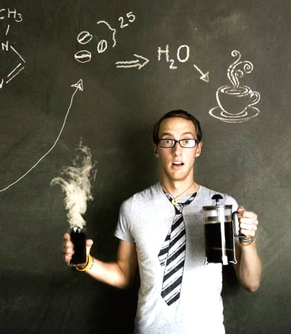

Кофеин высвобождает оксид азота, улучшая работу кровеносных сосудов.
В сентябре 2018 года журнал Nephrology Dialysis Transplantation опубликовал статью об исследовании, проведённом Национальным Центром Статистики Здравоохранения. В исследовании приняло участие 4 863 человек с хронической болезнью почек. Наблюдение показало, что при употреблении кофе риск смертности снижался на 25%.
«Кофе без кофеина снижает риск диабета не хуже, чем обычный кофе»

Джозеф Раффлер
пресс-секретарь Американского химического общества
Настроение
Ежедневное употребление двух чашек кофе снижает риск суицида на 50%, а также спасает нас от депрессии.
При употреблении кофе наш организм начинает усиленно вырабатывает такие вещества, как серотонин, дофамин и норадреналин. Эти вещества стимулируют центр удовольствия в мозге человека.
Выпивая чашку кофе в день, вы отдаляете возникновение у вас болезни альцгеймера.
Выяснилось, что пожилые люди, пьющие кофе, отдаляют появление симптомов болезни Альцгеймера в среднем на три года.
За эти исследование мы благодарим Университет Южной Флориды и исследовательский отдел журнала TIME, которые проследили за двумя тысячами людей старше 65 лет.